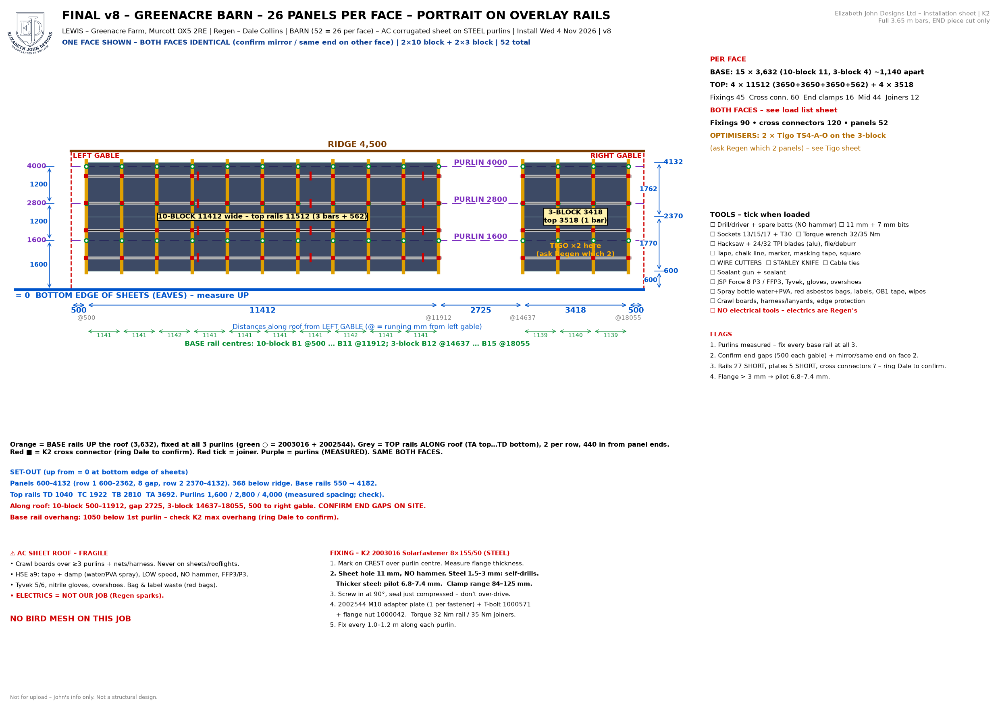
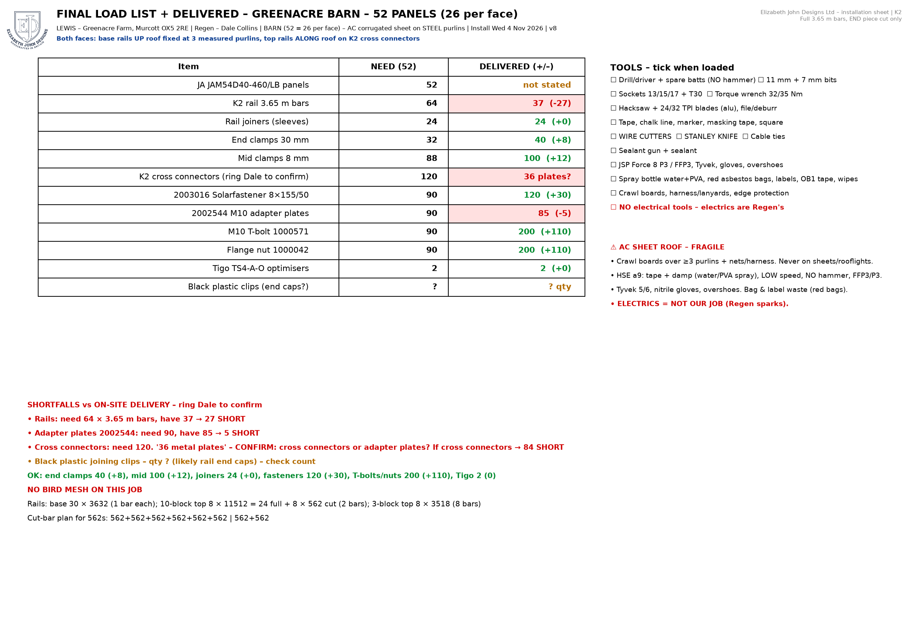
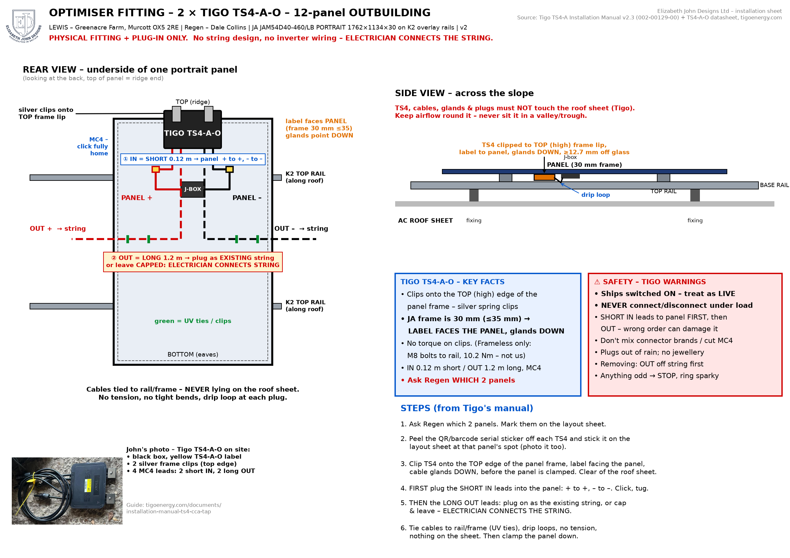

Lewis – Greenacre Farm, Murcott OX5 2RE · 4–6 Nov 2026 · FINAL v8
One barn roof, 26 panels per face (52 total) – ALL PORTRAIT on overlay rails. Each face: 2×10 block + 2×3 block. Both faces identical – confirm mirror/same end on face 2.
Measured: face 18,555 × 4,500, purlins 1,600 / 2,800 / 4,000. Panels 600–4,132 up. Blocks 500 from each gable, 2,725 gap – confirm end gaps on site.
SHORT: 27 rails (need 64, have 37), 5 adapter plates (90 vs 85). Cross connectors: need 120 – are the 36 metal plates cross connectors? Ring Dale to confirm.
2 Tigo TS4-A-O on the 3-panel block – ask Regen which 2. No bird mesh on this job. Electrics = Regen's.
← Back to the app Full pack (PDF)


Optimisers (3-panel block): fit & plug-in only – electrician connects the string. Tigo TS4-A-O – label faces panel, short IN leads first.
